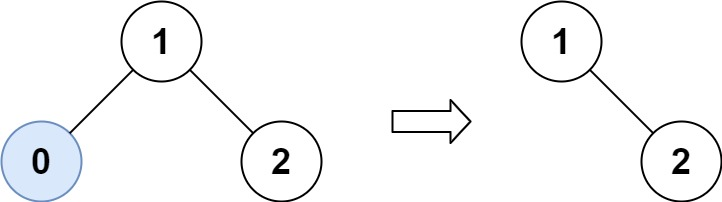
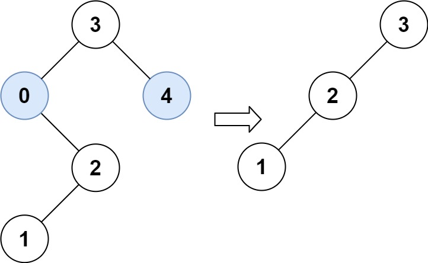

| Category | Difficulty | Likes | Dislikes |
|---|---|---|---|
| Algorithms | Medium | 6063 | 264 |
tree | depth-first-search | binary-search-tree | binary-tree
google | amazon | bloomberg
Given the root of a binary search tree and the lowest and highest boundaries as low and high, trim the tree so that all its elements lies in [low, high]. Trimming the tree should not change the relative structure of the elements that will remain in the tree (i.e., any node's descendant should remain a descendant). It can be proven that there is a unique answer.
Return the root of the trimmed binary search tree. Note that the root may change depending on the given bounds.
Example 1:

Input: root = [1,0,2], low = 1, high = 2
Output: [1,null,2]Example 2:

Input: root = [3,0,4,null,2,null,null,1], low = 1, high = 3
Output: [3,2,null,1]
Constraints:
[1, 104].0 <= Node.val <= 104root is guaranteed to be a valid binary search tree.0 <= low <= high <= 104